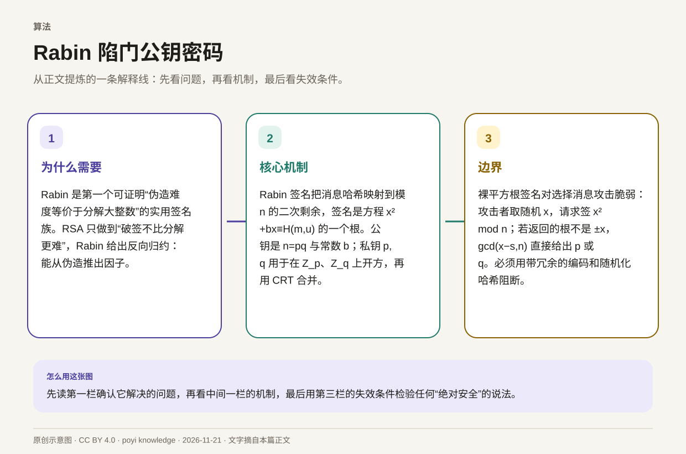
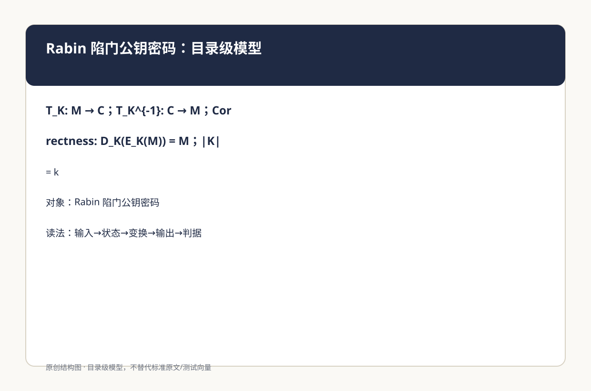

原理与机制
算法：Rabin 陷门公钥密码（Rabin Cryptosystem）。### 二次剩余陷门
Rabin 签名把消息哈希映射到模 n 的二次剩余，签名是方程 x²+bx≡H(m,u) 的一个根。公钥是 n=pq 与常数 b；私钥 p,q 用于在 Z_p、Z_q 上开方，再用 CRT 合并。### 四根与编码
平方映射的每个值有四个根；签名者只公开一个，两个不同根会泄露 gcd 从而分解 n。标准化变体用 Rabin-Williams 编码和冗余，并把随机串 u 纳入哈希，避免根选择歧义和选择消息攻击。### 安全归约
在随机预言机模型下，伪造签名可归约为求模 n 平方根，而求平方根与分解 n 等价。验证只需一次模平方和编码检查，比 RSA 的模幂快数百倍。

为什么重要
Rabin 是第一个可证明“伪造难度等价于分解大整数”的实用签名族。RSA 只做到“破签不比分解更难”，Rabin 给出反向归约：能从伪造推出因子。验签一次平方，签名端一次开方加 CRT，计算量都低于同规模 RSA；这让它适合智能卡、传感器和低功耗验证方。代价是签名端要处理四根与编码，工程上比 RSA 难用，标准化版本转向 Rabin-Williams。
应用与实例
Rabin-Williams 变体进入 ISO/IEC 14888-2（带附录签名）与 ISO/IEC 9796-2（消息恢复签名），IEEE P1363 也收录 Rabin；主要用于标准教材、嵌入式验签和需要可证明因子分解安全的场景。实际部署远少于 RSA：签名是概率性的，根选择、编码和专利/生态都增加成本；现代 TLS、代码签名和证书几乎只用 RSA、ECDSA 或 Ed25519。

边界与攻击面
裸平方根签名对选择消息攻击脆弱：攻击者取随机 x，请求签 x² mod n；若返回的根不是 ±x，gcd(x−s,n) 直接给出 p 或 q。必须用带冗余的编码和随机化哈希阻断。ISO 9796-2 的 Rabin-Williams 实例曾被 Coron–Naccache–Stern 类攻击和后续改进攻击；哈希太短或编码不当会允许伪造。参数、编码和根的选择都必须按标准执行。
历史与背景
Rabin 1979 年在 MIT/LCS/TR-212 提出该方案；Williams 1980 给出 Rabin-Williams 变体，使签名更接近 RSA 形式；Bellare–Rogaway 1996 给出精确安全界；随后进入 ISO/IEC 14888-2 与 9796-2。它影响了可证明安全签名和基于分解的密码学，但因工程复杂性未成为主流。
技术参数与复算边界
该条目的形式模型是 (C=E_K(P;r),\qquad P=D_K(C))。输入：输入：Rabin 陷门公钥密码的公开参数、密钥/随机数与消息；变量说明：P 明文，C 密文，K 密钥，r 随机化参数。 预期输出：按 Rabin 陷门公钥密码 的规范执行后得到可验证的输出或可比较的优势界。 复算必须给出输入、步骤、输出和单位；示例只演示流程，不替代标准测试向量。
复杂度由密钥长度、分组/状态规模、轮数、随机数质量和敌手模型共同决定；参数越界、版本差异与实现侧信道都可能使公式结论失效。已登记限制：该条目只给出形式模型与可复算步骤，不声称已完成生产实现、侧信道认证或第三方安全评估。
参数与状态规模
公式 (C=E_K(P;r),\qquad P=D_K(C)) 的输入、输出和单位必须逐项登记；复算顺序为：1. 按算法规范编码输入 2. 在密钥控制下执行轮函数 3. 输出密文并检查长度与格式。
状态规模、密钥长度、分组长度和轮数决定复杂度；这些量不能从标题推断，必须以标准或实现文档为准。
测试向量与实现边界
标准测试向量只证明某组输入在某个实现中产生了预期输出，不证明所有参数都安全。记录测试向量时至少要写：算法/模式、密钥、明文或消息、随机数/IV、输出长度、实现版本。该条目已登记的限制是：该条目只给出形式模型与可复算步骤，不声称已完成生产实现、侧信道认证或第三方安全评估。
如果实现使用查表、分支或可变时间操作，算法层的证明不能替代侧信道评估；如果协议层没有认证，算法层的机密性也不能阻止替换或重放。
逐步示例与核验
形式模型与复算步骤
[C=E_K(P;r),\qquad P=D_K(C)]
Rabin 陷门公钥密码的公开参数、密钥/随机数与消息；变量说明：P 明文，C 密文，K 密钥，r 随机化参数。1.按算法规范编码输入。2.在密钥控制下执行轮函数。3.输出密文并检查长度与格式。边界：公式只覆盖已登记的参数与假设；参数取值、标准版本和实现细节仍以来源为准。
参考出处
- Wikipedia search entry for Rabin 陷门公钥密码. https://zh.wikipedia.org/w/index.php?search=Rabin%20%E9%99%B7%E9%97%A8%E5%85%AC%E9%92%A5%E5%AF%86%E7%A0%81
- Handbook of Applied Cryptography (Menezes, van Oorschot, Vanstone). https://www.cacr.math.uwaterloo.ca/hac/